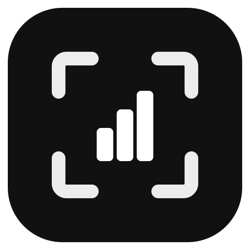

Studio Focus
Check
your
channel.
Skip
the
feed.
You open YouTube to look at your stats, and an hour later you are watching something else. Studio Focus covers everything that is not about running your channels.

How it works
You open YouTube
Any youtube.com page: the home feed, a video, Shorts, search.
A white page covers it
Anything that is not channel management is hidden. Playing video is paused.
You go straight to work
Shortcuts to Studio, the channel switcher and your own channels sit right on the white page.
What stays open, what is covered
studio.youtube.comOpenyoutube.com/channel_switcherOpenyoutube.com/@yourchannelOpenyoutube.com (home feed)Coveredyoutube.com/watch?v=…Coveredyoutube.com/shorts/…CoveredBuilt to stay out of the way
Your channels
List your @handles or channel IDs in the popup. Their pages on youtube.com stay visible.
Escape hatch
Need a page for real? Unlock for 5 minutes, or pause the extension for 15.
Private
No network requests, no tracking. Settings stay on your device. One permission: storage.
Open source
MIT license, a few small files, no dependencies. Read it in five minutes.
Install
- Download or clone the repository.
- Open
chrome://extensionsand turn on Developer mode. - Click "Load unpacked" and choose the
studio-focusfolder.
Chrome, Edge, Brave and other Chromium browsers.